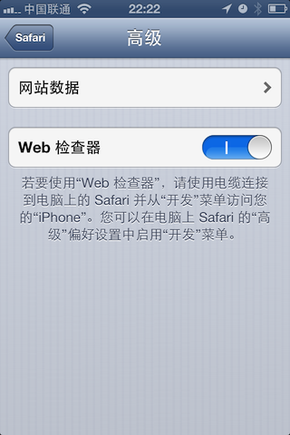
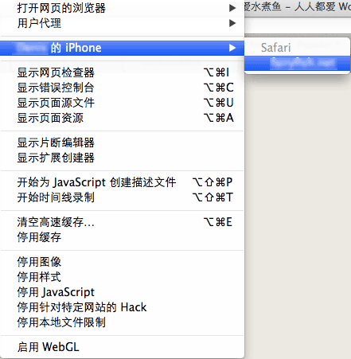
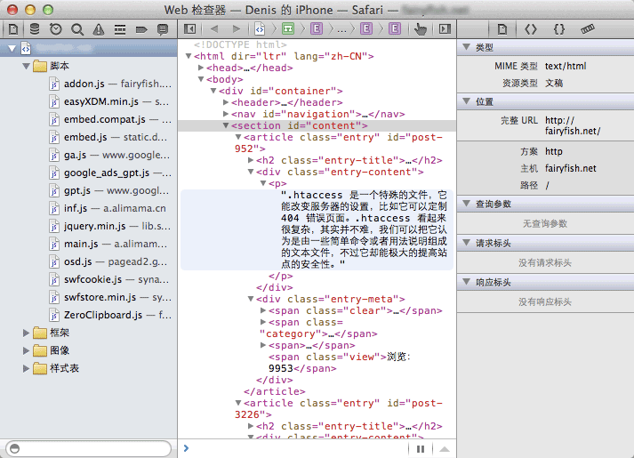

iOS 6 给 Safari 增加了远程的 Web 检查器工具(Remote Web Inspector)，你可以通过模拟器或者真实的设备(通过 USB 连上 Mac)进行调试。下面讲讲详细的调试过程：
1. 要进行远程调试，首先要打开开启 iPhone/iPad 上的 Safari 的远程调试功能，“通过 设置 > Safari > 高级”开启：

2. 然后打开 Safari，开启你要调试的网页，当然原生应用中通过 WebView 开启的网页也是可以调试的。
3. 最后把 iPhone 或者 iPad 通过数据线连上 Mac 电脑，打开桌面版的 Safari(目前 iOS 6 的 Safari 远程调试只支持通过 Mac 上的桌面版的 Safari 进行，Safari for Windows 目前还没有此项功能)，点击开发菜单，选择你调试的 iPhone/iPad 的设备名，选择调试的网页。

4. 最后就是调用桌面版的 Safari 的 Web 检查器对 iPhone/iPad 上的 Safari 应用进行调试：

这个调试过程和我们平常在 Mac/PC 上调试基本一样，比如可以对 HTML 和 CSS 做些实时的改动，查看修改后的效果。查看 cookie，本地存储，session 等一些数据。查看 WebApp 的性能，网络请求等，也可以查看所有错误和警告信息对程序进行修正。
当然我们可以通过它来调试 Javascript，设置断点，定义未捕获的意外等。也可以访问 Console，直接执行 Javascript 代码。
另外它还支持触摸检查(Touch to inspect)：激活检查器上的手型图标，就可以通过在 iPhone/iPad 上触摸，就能立即找到检查器对应的 DOM 元素。